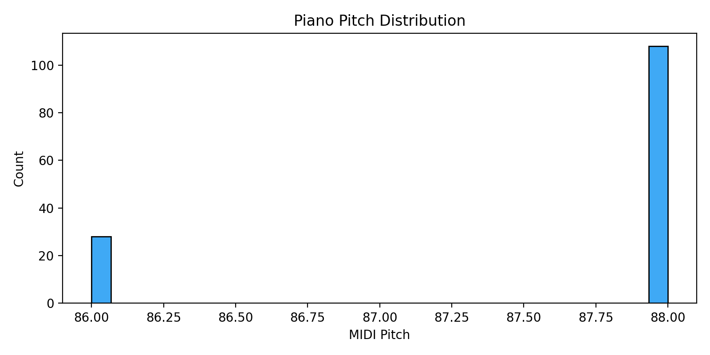

Dataset
Lakh Pianoroll Dataset
We use the cleansed version of the Lakh Pianoroll Dataset (LPD) . LPD contains 174,154 multitrack pianorolls derived from MIDI files in the Lakh MIDI Dataset (LMD).
The cleansed subset includes 21,425 pianorolls that are in 4/4 time and aligned with entries in the Million Song Dataset (MSD) .
Training Data Processing
- Symbolic timing is used (tempo information discarded)
- Velocity information removed using binary-valued pianorolls
- 84 pitch values (C1 to B7)
- Tracks merged into 5 categories: Bass, Drums, Guitar, Piano, Strings
- Only tracks tagged with rock are retained
- Musically meaningful 4-bar phrases extracted using structure features
Final tensor shape: 4 (bars) × 96 (timesteps) × 84 (pitch) × 5 (tracks)
Example Pianorolls
Below are representative multitrack pianorolls from the training data. Tracks (top to bottom): Bass, Drums, Guitar, Strings, Piano.

Reference
- Serrà, J., Müller, M., Grosche, P. and Arcos, J.L. (2012). Unsupervised Detection of Music Boundaries by Time Series Structure Features. AAAI Conference on Artificial Intelligence.
- Huang, C.-Z.A., Vaswani, A., Uszkoreit, J., Shazeer, N., Simon, I., Hawthorne, C., Dai, A.M., Hoffman, M.D. and Eck, D. (2018). Music Transformer: Generating Music with Long-Term Structure. International Conference on Learning Representations (ICLR).
- Dong, H.-W., Hsiao, W.-Y., Yang, L.-C. and Yang, Y.-H. (2018). MuseGAN: Multi-track Sequential Generative Adversarial Networks for Symbolic Music Generation and Accompaniment. AAAI Conference on Artificial Intelligence.
- Briot, J.-P., Hadjeres, G. and Pachet, F. (2020). Deep Learning Techniques for Music Generation. Springer.
- Roberts, A., Engel, J., Raffel, C., Hawthorne, C. and Eck, D. (2018). A Hierarchical Latent Vector Model for Learning Long-Term Structure in Music. International Conference on Machine Learning (ICML).